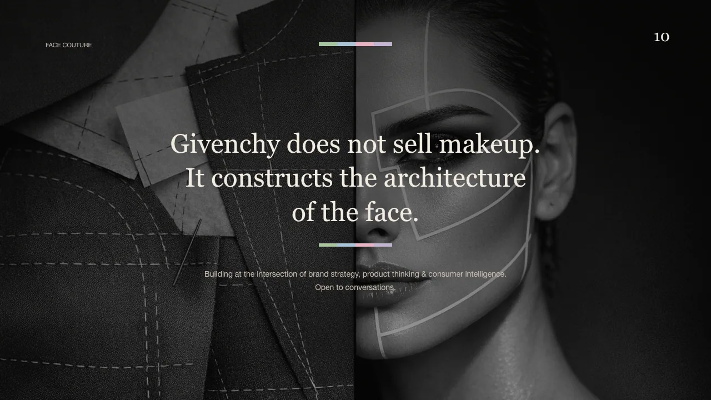
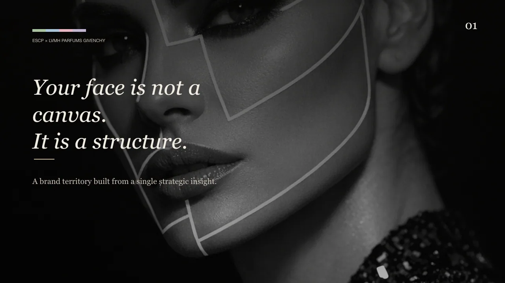
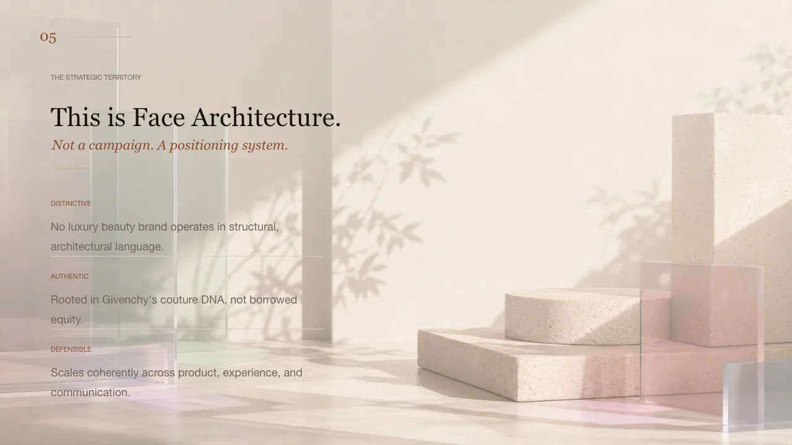
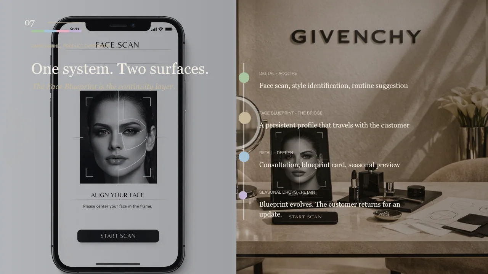

Couture was being cited. It was not yet operationalized in beauty.
Luxury beauty strategy / Presented to the Givenchy beauty team
Givenchy owned couture,
not beauty.
Face Architecture reframed beauty as something constructed with the same discipline couture brings to the body: structured, personal, and seasonally refreshed.
Givenchy did not yet own the face.
Observation
Prestige existed. Territory did not.
System
Face Architecture
Format
Strategic concept deck

01
Observation
Givenchy could reference couture beautifully. It could not yet own beauty as a territory.
The useful signal was not that Givenchy lacked prestige. It already had that. The issue was strategic translation. Couture functioned as heritage reference, not as a beauty idea people could name, feel, and revisit.
Margin note
If a luxury house cannot name its beauty territory, it keeps borrowing equity from itself instead of compounding it.
02
Tension
Heritage creates authority. It does not automatically create a recognizable beauty system.
In a saturated luxury beauty field, “couture DNA” is too vague to defend on its own. The challenge was to define a territory that felt authentically Givenchy, strategically ownable, and expansive enough to live across product, ritual, digital, and retail.
Why this mattered
Prestige can attract attention once. Territory is what gives people a reason to return.

03
System
Face Architecture turned couture from reference into operating logic.
The answer was to treat the face the way couture treats the body: through construction, proportion, structure, and refinement. That shift created a system rather than a campaign thought.
System sentence
Couture stopped acting like heritage reference and started acting like operating logic.
Architecture Palette as the hero object of the system.
Blueprint-style consultation making personalization feel ritualized.
Seasonal runway refreshes that keep the territory alive over time.
04
World
The system became legible through image, ritual, and ecosystem thinking.
Once the territory was clear, the expression followed naturally. The deck connected product form, face mapping, runway cadence, and luxury visual codes into one coherent world.


05
Outcome
What this proves.
This project demonstrates how a luxury heritage code becomes a usable system: not just a moodboard, but a territory with internal logic, expressive range, and room to scale.
A distinct beauty idea rather than generic prestige language.
Signals tuned for a brand world that needs restraint, not noise.
A structure able to move across product, experience, and communication.